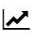

O que é melhor para você?

 Agilidade
Agilidade
- Transferências mais rápidas (TED/DOC)
- Maiores limites para transferências
- Facilidade de realizar Transferências
 Economia
Economia
- Menores taxas para realização de TED/DOC para outros bancos
- Menores taxas de anuidade
- Menores juros
 Rentabilidade
Rentabilidade
- Possibilidade de investir o dinheiro guardado
- Melhores carteiras de investimento
- Liquidez diária
Segurança
- Maior segurança na hora de guardar e investir seu dinheiro
- Bancos que possuem garantia FGC na hora de investir seu dinheiro